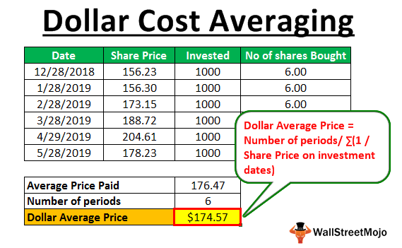
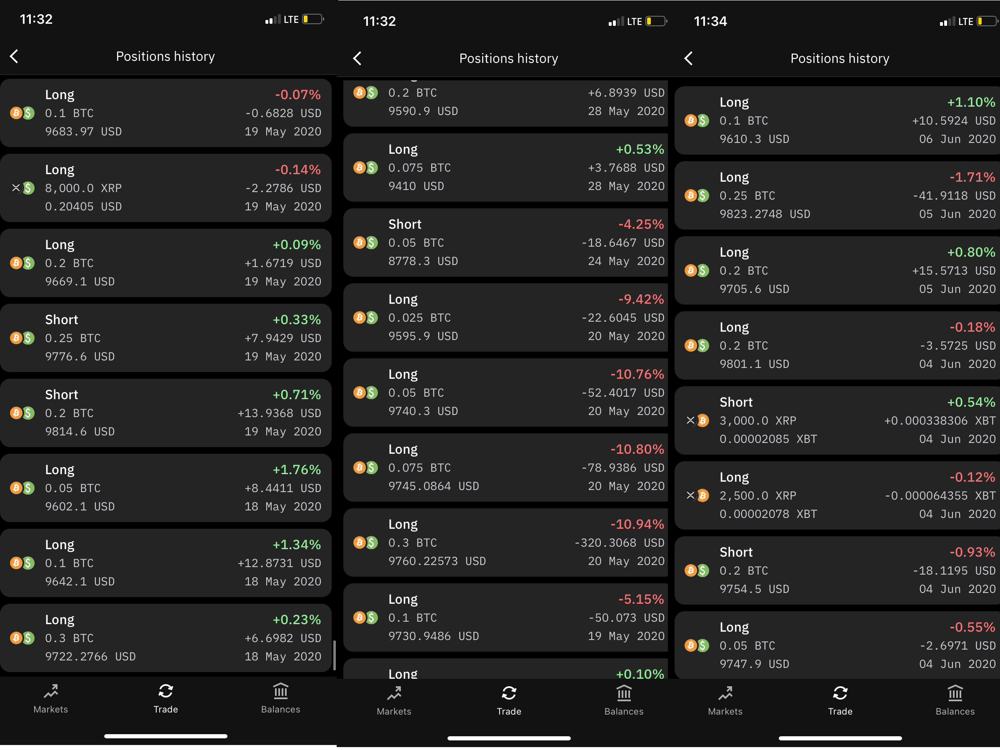
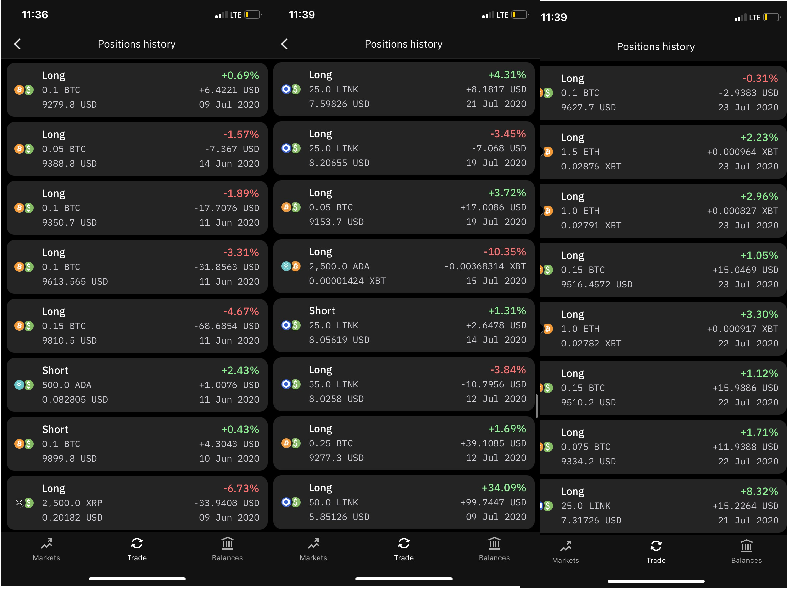
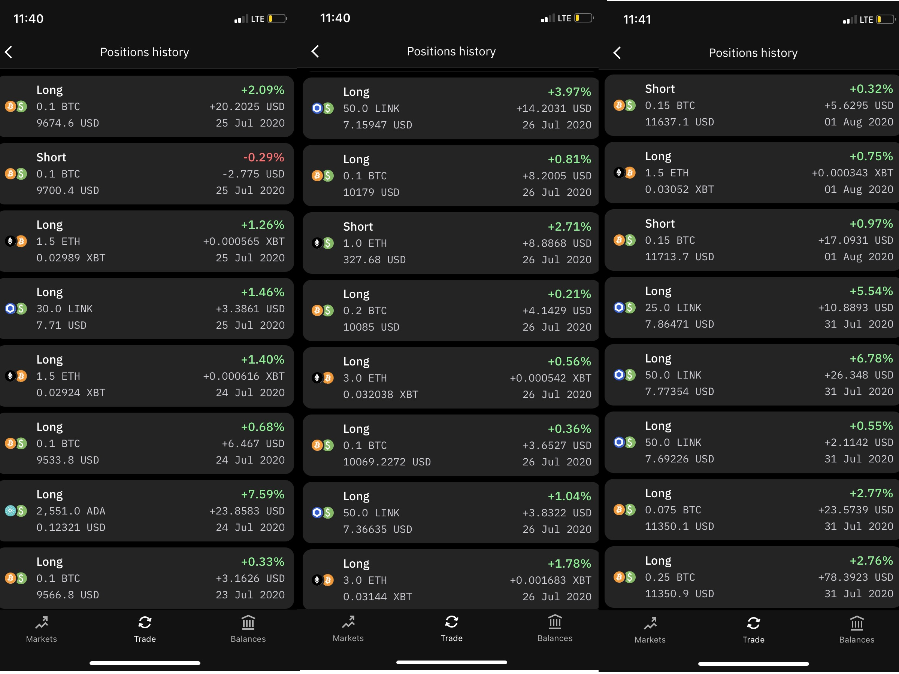
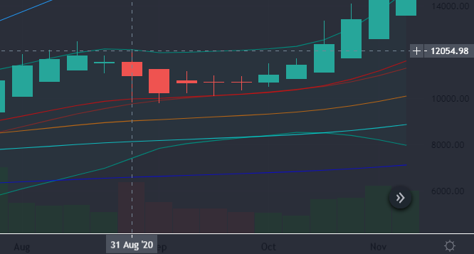
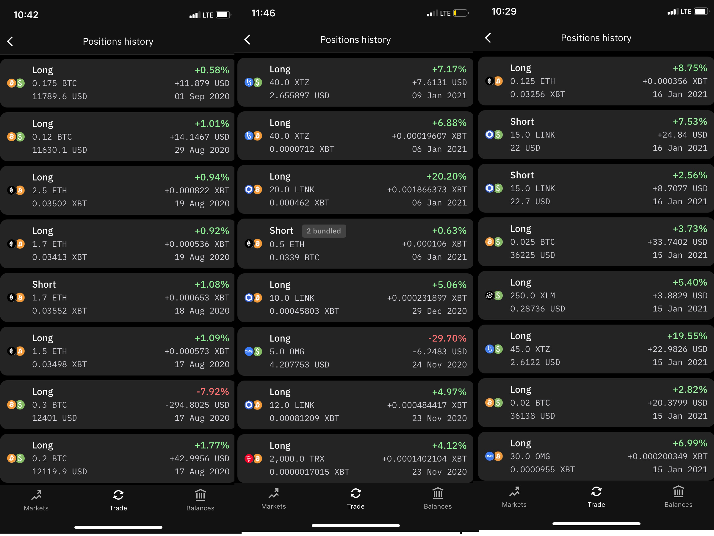

Why Bitcoin matters
Unless you’ve been living under a rock in a hole in the wall you have probably heard about bitcoin by now. You know that weird digital money that silicon valley types love. Maybe you were curious or maybe you were dismissive like many. Blockchain? Private keys? Hash rate? Crypto wallets? Just the jargon alone can seem intimidating especially for the technically challenged. After all, there is no help desk or 1-800 number you can call if you need support. Is it even worth it?
What if I told you a single bitcoin is worth $40,000! ($39, 545 at the time this was written) There is great opportunity but you can get burned if you dont know what your doing. I have had some success in crypto this and last year and wrote this article to share what i have learned.

image caption
The roots of Money
How can something be worth so much when I can't even hold it in my hand? To better understand this it is helpful to understand the roots of our current monetary system. If digital money seems strange to you, think about why a craftsman would be willing to give up something he put in time and sweat into for a few pieces of green paper.The folks over at Extra credits put together an excellent series on this subject.
The Massive global economy and its participants rely on the shared belief that this paper is worth something. It is a store of value. This agreement allows us to Trade goods and services across great distances. Trade itself is at the center of this agreement and has been with us since our days as hunter gatherers. “Lets say that i make shirts and you grow food. Well if you want a shirt and i want food,Awesome we can trade! But what if i dont want your goes bad before i have the shirts, or if your all up on shirts well, we cant trade can we?...Maybe i can find somebody with some third good that you do want. But that means a lot of time is consumed by trading”(1) It also means that if i cannot find some third good that does not perish and that you do want then no food for me.
Problems and solutions
This scenario gets even messier if you scale it up to a whole city or country. Everyone would be running around like some giant scavenger hunt trying to find the right items to trade for the things that we really want. The simplest solution would be to grow my own food but that means less time and energy to spend doing the things I love like making shirts. Our current economy is built on diversity and specialization. This is only possible when we can focus on our chosen role and trust that we can trade with others to get the things we need and don't have. This becomes a lot easier if there was an agreed upon third good that was accepted by everyone and could be used to trade for anything. Money is this Third good.
There is more to the history than that but at its core Money is simply a solution to a problem. Same goes for bitcoin. It's just a different problem solution fit. Our current monetary system is managed by the banking system along with the federal reserve. They control who gets access to debt, how much money is in circulation, interest rates and more. We trust These entities to Act in the best interest of the people. The crash of 2008 proved that our trust had been misplaced. Deregulation, Greedy investment bankers, bad loans, and bad financial policy combined to form a spectacular crash with the government ( and by extension the taxpayers) left to pick up the tab.
The incident exposed hidden flaws in our system. As individuals we just need to be able to exchange value with one another however the financial institutions that make this possible are designed in a way that they get the greatest benefit. If only we could have a truly peer to peer system that allowed us to exchange value with no third party following rules that no individual or group could alter. Enter Bitcoin. This is a simplified version of things but if you wish to understand how the technology works and what makes it so secure the video below explains things pretty well.
Investing in bitcoin
Alright! Explanations out of the way now how do you actually invest? The answer to this depends on how much time and energy you wish to commit. For those who don’t care to learn the details of cryptocurrencies and exchange you can still benefit from the growth of the market. The easiest way would be purchasing through a cash app. Just open up the application. Click the icon that looks like a line graph, select bitcoin, and choose the amount you wish to purchase.
My recommendation to this type of investor would be to do what is known as dollar cost averaging. This is when you buy a set amount at regular intervals. (ex.$25 each week). Bitcoin can be very volatile. When I started writing this article last night the price of one coin was $39, 545. Less than 24 hours later it is sitting at 36,170. If i had $500 to invest and i put it in right before the drop i would be disappointed watching my money disappear. If instead i put half yesterday and half today i would have the same amount of bitcoin at an average price of 37,857. This is a long term strategy. There will be ups and downs and following this method will guarantee that you make a decent profit over time without having to do any technical analysis.
For those who wish to get the most out of the market I would recommend taking things a step further and doing what is known as leverage trading. I would advise against this unless you have some experience with the markets and using an exchange. There is a lot of money to be made but you can also lose your money just as fast. If you still wish to continue please take a moment to read this article in its entirety. 90% of traders lose 90% of their investment in the first 90 days. You do not want to be this person.
Education: The 90-90-90 rule - Why do traders fail?My time in bitcoin (w/ recipts)
I plan on writing another article next week diving into the exchange I use along with other resources that I use to assist me with technical analysis. Opinions are not hard to find and it is always best to do your own analysis and to verify the ability/ background of those you take inspiration from. Same applies to me. I don't mind showing my receipts.
I have been aware of bitcoin since 2009. Saw the potential then but did not invest. Regretted it when I saw bitcoin hit 19,000 in 2017. Thought I missed the boat then and was not about to make the same mistake again. When the big corona dump happened in march of this year and bitcoin rebounded faster than even gold i knew for a fact it was her to stay. It was then that I dove deep into technology and the market. I learned the terms, studied the white paper of bitcoin and various alt coins. I studied the charts and learned from a popular analyst on youtube and jumped in
I Started off with about $1200. Few small gains doin okay. I had a basic understanding of the market but knew nothing about technical analysis. Studied the charts and listened to mroe experienced voices trying to make sense of what they said. Ima a quick learner so i started picking up some patterns Got a sense of false confidence and paid for it. Lost half of what i started with on what should have been a small loss but i wouldnt back out. I thought i knew more than i really did.
I didnt give up. fell back a lil observed more made and smaller bets. by July I started picking up steam and was quickly replacing what was lost
I took off! I started having whole runs without a single negative trade. I Still didnt know technical analaysis at this point but my background in tecknology and business helped me to understand the market and the influences and the psycology of trading. Watching the Charts every day was also giving me insight. I did not understand it well enough to explain but the chart was like an animal to me and over time watching my prey i knew by instinct where to strike.
in a few short months I managed to bounce back and climb up to $3200.The sky was the limit or at least it shoudl have been. It only takes a few poor decisions to erase it all. I Experienced and unexpected life event that resulted in me losing my car. I also was stressed from month of pushing myself at work and overdue for a break. I correctly predicted that bitcoin would take some time to rest after breaking 10,000. I took out nearly 100% of my profits to handle business and pleasure under the assumption that i could relplace it before the price took off again. I set myself up. to fail. Not too long after i was placed on furlough, unable to reinvest and watched the rocket take off without me
It hurt me to the core. If i just suffered my situation as if that momey didnt exist and continued at the rate i was going i would be looking at over 10,000 by now. It was a humbling and neccesary experience. The next few months were rough. I still havent had an actual paycheck since that date but i Continued to push towards my dreams and trust that tings would align. When I got word that a second round of stimulus was coming i knew it was time to reinvest. This time i did it a lil different though. I borrowed $600 from my best friend witht the promise to return when stimulus came in. I purchased a technical analysis course to strengthen my foundation, paid a few bills, and put what was left in the markets. Chooseing to invest in my education paid off immediately. I have started off the year with a pattern of positive trades and consistently getting better returns that what i was able to do from self education alone. This time i was able to double my initial investment in less than two weeks!
Alt season is upon us!
If you're still waiting on the sidelines thinking you missed your chance it is not too late! Can pretty much guarantee that bitcoin will hit 6 figures before the year is over. What's even more interesting to me right now though are the alt coins. The bitcoin market gets more mature and more stable with each passing year. This latest cycle is expected to boost bitcoins price by 5x to 10x by the time it's done. The alt coin market is younger and gains of 100x or more are still very realistic. You are not gonna get the option to purchase alt coins through cashapp. You will need to download coinbase or another exchange such as kraken in order to take advantage. It is also more risky. There are currently thousands of alt coins on the market and most of them are trash. Finding the good ones takes a bit more effort and research. This article is getting kinda long so if you don't know that explanation will have to wait until later but for those who are familiar
Moving forward I plan to talk more about the specific alt coins I am betting on and why. I am also doing research into DHedge . This platform allows investors to essentially become their own hedghe fund. make a basket of investments So that those who are interested can follow my trades and performance and invest in the pool to maximise your opportunity without doing the research and analysis yourself. My track record so far is pretty good. I am building on top of that foundation with a proper course in technical analysis. I Have also been given funds to manage by a few friends of mine and would like to allow others the opportunity to benefit as well. Stay tuned for more.